Our first full day in Tokyo, and what do we do? Tokyo public gym: $6.00 USD. In it, you can use all the gym facilities as well as the shower facilities. The shower consists of onsen-style personal washing cubicles, alongside a small bath where you can let your muscles relax. In true Japanese fashion, no shoes into the locker room. Take them off and walk barefoot in. Dedication to procedure. Afterwards, we go outside and get a Pocari at the vending machine and are on our way for food.
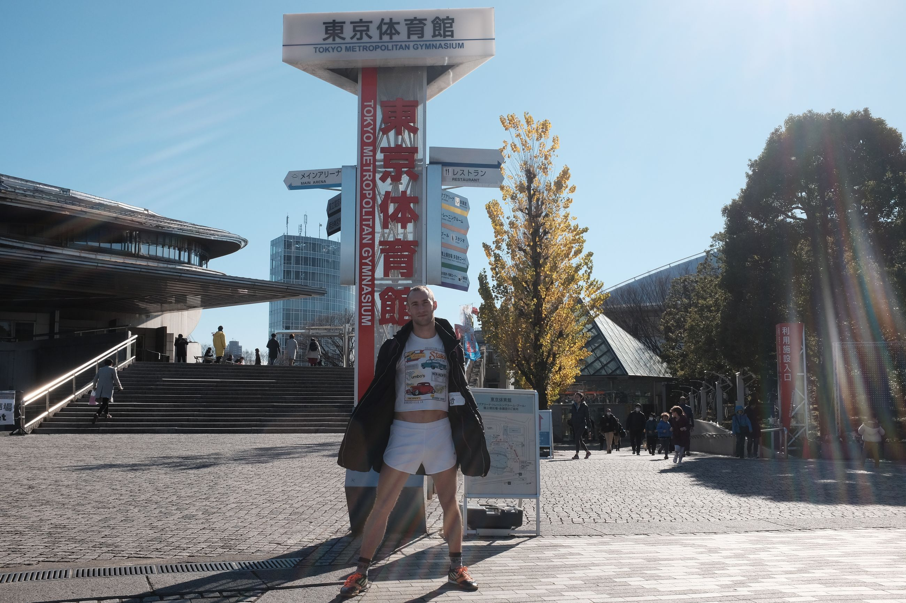 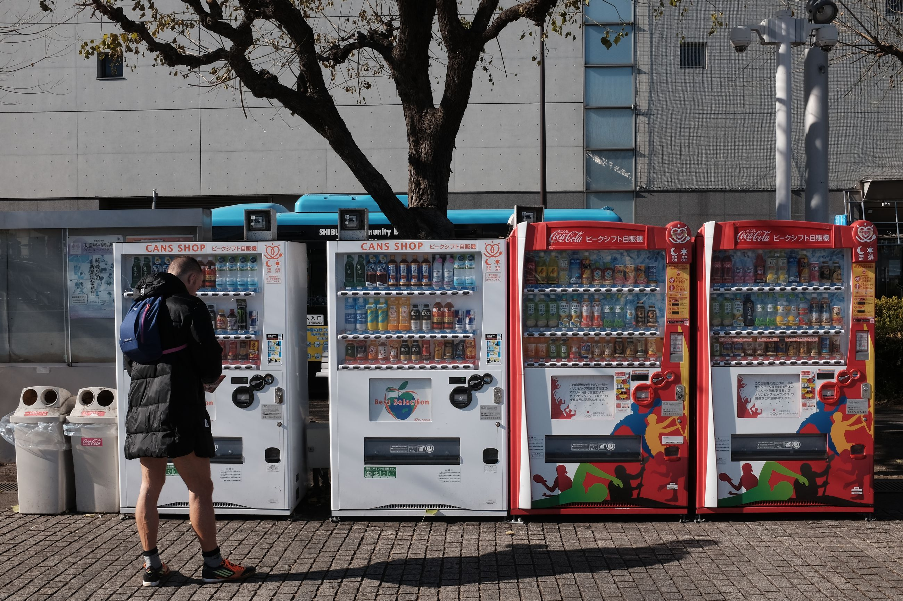
Best part about Japan are the randomly placed small ramen shops that all sell decent quality ramen. Attention to quality.
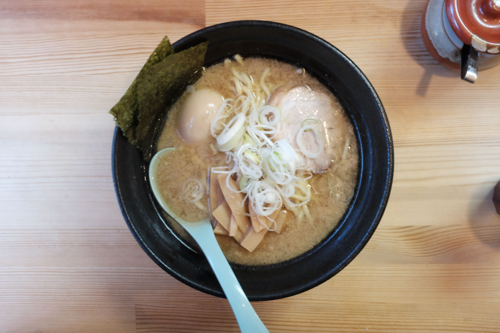 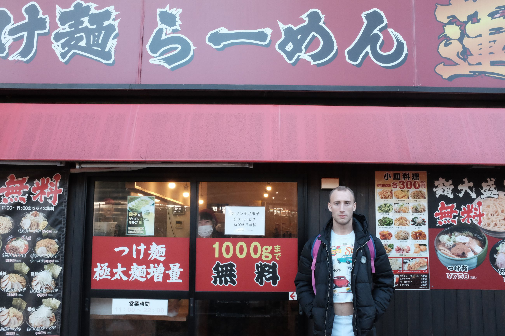
Afterwards, we head towards Meiji Shrine to go see some religious things. The Japanese style of park: large walkways, long pathways, temples, and silence. A group of dancing Chinese aunties here just wouldn't work.
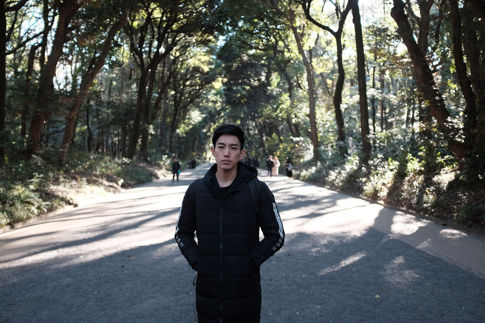 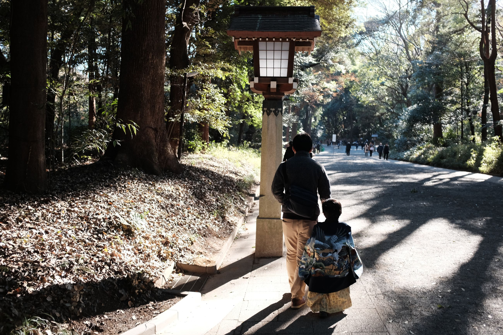 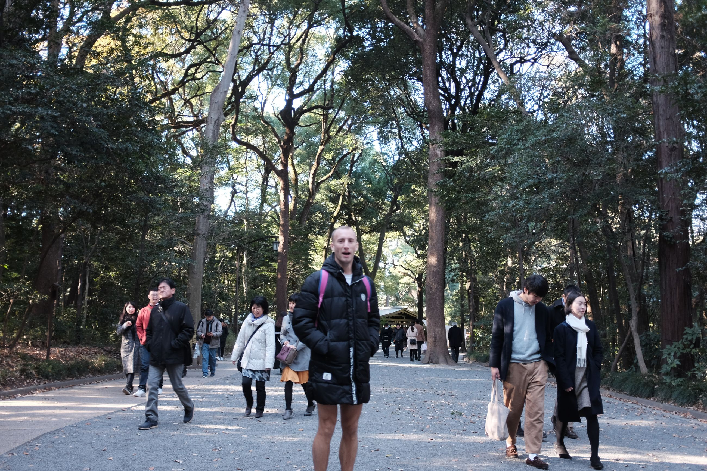 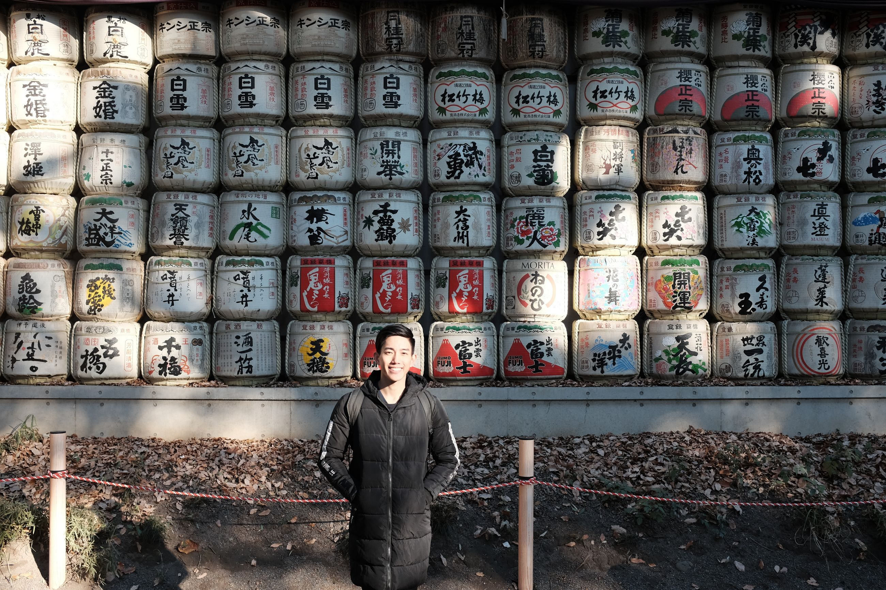
We mull over to the Harajuku region but just stop in for a small coffee at Doutor, slowly becoming one of our favorite establishments. At night, we head to Shinjuku to experience the crossing. Cliche, but you still gotta do it. It's a testament to Japanese innovation and simplicity, and iconic.
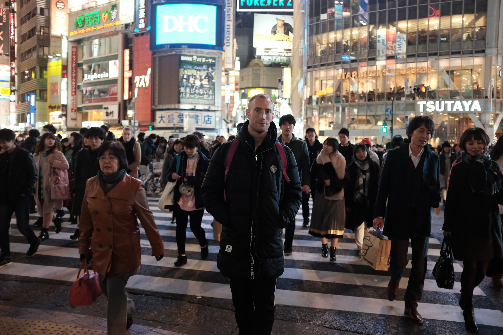 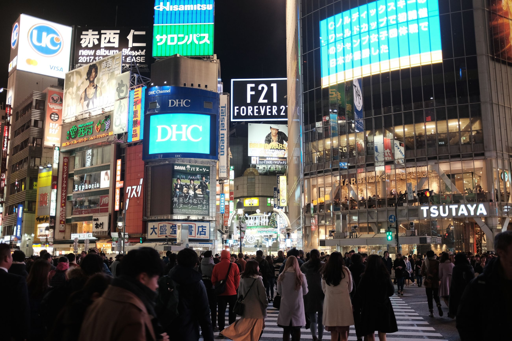 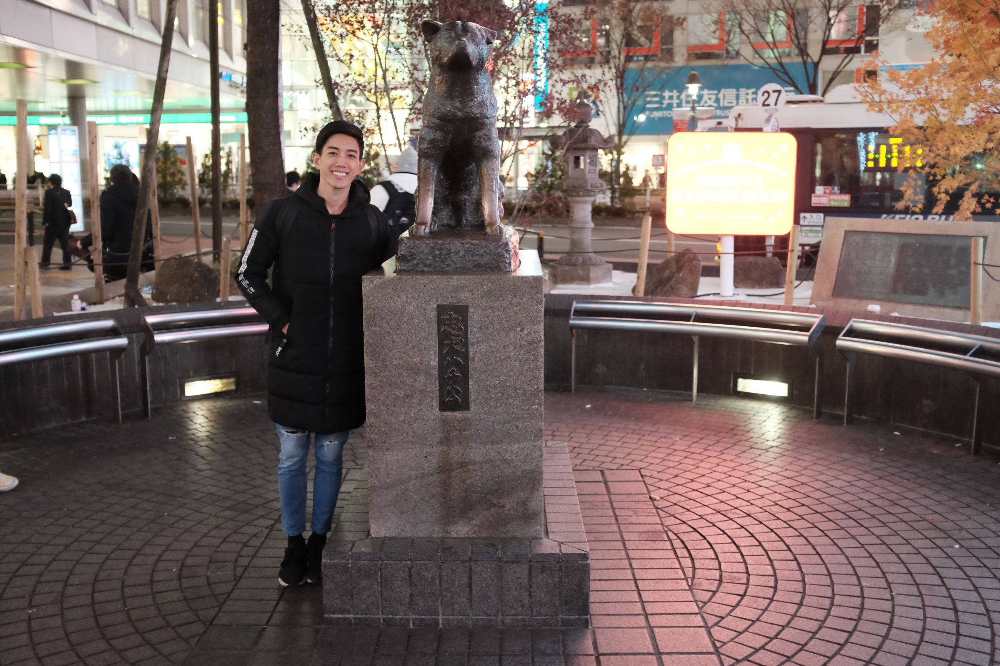
We're in Japan for aout 2.5 weeks, and it's not the cheapest place in the world to vacation. Most of our expenses go to the food and lodging, the latter which cannot be helped. For the food, we usually go with one of two options. If the country has a street-food culture, we eat that. If not, and restaurants are expensive, we try to find a smaller place outside of the city center. Tonight, there is a small place we've been passing by on the way from our accommodation to the train station. It's kind of a pick-n-mix of dishes to go with rice. Perfect, not too heavy, a good selection, great quality, served with a Japanese bow. Itedakemasu..
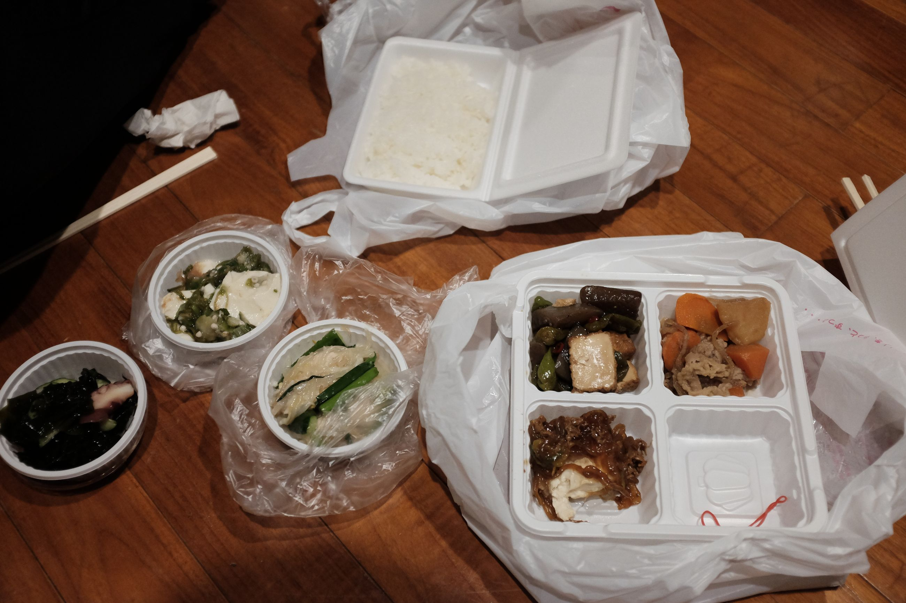